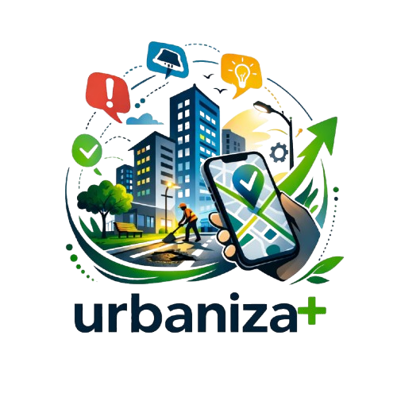
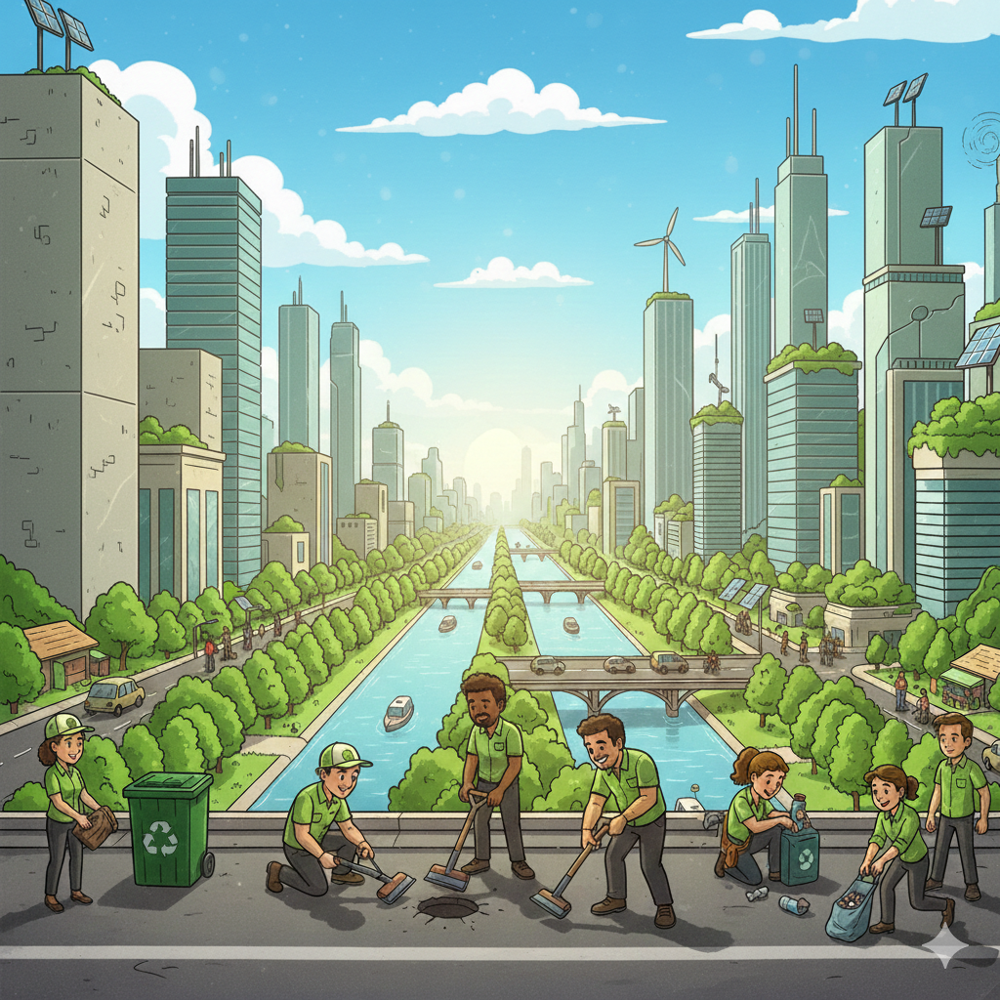

Somos a Urbaniza+, um sistema independente criado para organizar a força da população e transformar a maneira como os problemas das nossas cidades são relatados. Oferecemos uma plataforma intuitiva onde o cidadão pode registrar e detalhar falhas urbanas de forma estruturada, gerando evidências claras que facilitam o trabalho de fiscalização e solução. Nosso propósito é atuar como um canal de transparência e cidadania, garantindo que as denúncias sejam formalizadas com precisão para que os órgãos competentes possam acatá-las e resolvê-las com agilidade. Na Urbaniza+, acreditamos que a tecnologia nas mãos da comunidade é a ferramenta mais eficaz para construir um ambiente urbano melhor para todos.
Dar autonomia e voz ao cidadão através da tecnologia, fornecendo as ferramentas necessárias para que cada problema urbano seja documentado com precisão e transformado em uma demanda estruturada. Buscamos encurtar a distância entre o relato do problema e a solução, promovendo a transparência e a eficiência na gestão das nossas cidades por meio da participação ativa da sociedade.

Caso você tenha incertezas, entre em contato conosco
E-mail: urbaniza+@outlook.com.br